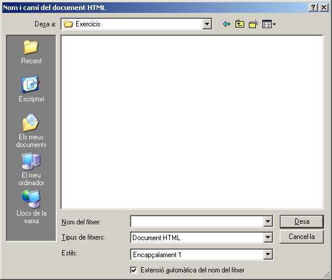

Crear documents HTML
LibreOffice Writer disposa de tres formes de crear un document HTML per tal que es pugui obrir amb el navegador d'internet:
- Desar qualsevol document que es pugui modificar amb el Writer en format HTML.
- Enviar el document que esteu editant com a HTML.
- Crear, de bell nou, un document en format HTML.
Desar com a HTML
Fent Fitxer | Anomena i desa… i seleccionant Document HTML (LibreOffice Writer) (.html) a Tipus desareu el document de tal manera que es podrà llegir amb un navegador d'Internet. El programa mostra un avís indicant que algunes característiques de format no es podran mantenir i es perdran. Aquesta forma de desar en format HTML és ràpida però poc precisa, ja que si el document és llarg, quedarà una tirallonga de text “intractable”.
Enviar com a HTML
Fent Fitxer | Envia | Crear un document HTML també es farà una exportació a format HTML. Aquesta segona forma de generar un fitxer en format HTML ja presenta alguns avantatges respecte a l'anterior. Es pot associar un estil de paràgraf dels predeterminats (per exemple Encapçalament 1) a un salt de pàgina, de tal manera que cada vegada que es trobi aquest estil es generarà una pàgina web nova i se'n generarà una d'extra al principi, a mode d'índex, amb els enllaços a les altres. Si el document conté imatges, aquestes es gravaran en format JPEG i es referenciaran amb etiquetes <IMG> dins del fitxer HTML.

- Recupereu el fitxer laparada.odt.
- El document ja té aplicat l'estil Encapçalament 1 als títols. Comproveu-ho.
- Deseu-lo com a laparadadesat.html fent Fitxer | Anomena i desa… i obriu el fitxer resultant amb el vostre navegador d'Internet.
- Tanqueu el fitxer.
- Torneu a recuperar laparada.odt.
- Ara, feu Fitxer | Envia | Crear un document HTML.
- Assegureu-vos que us destaca l'estil Encapçalament 1.
- Deseu-lo com a laparadaenviat.html.
- Observeu que LibreOffice Writer us ha generat una nova primera pàgina i que, clicant els enllaços que conté, obriu els altres documents.
- Observeu també quina estructura de fitxers s'han generat en desar el document d'aquesta forma.
Crear com a HTML
Si voleu crear una pàgina web des de zero…
- Creeu un nou fitxer Fitxer | Nou | Document HTML. Al moment de desar-lo, comproveu que ho feu amb format Document HTML (.html).
- Creeu un nou document Fitxer | Nou | Document de text (o bé cliqueu la icona ). Canvieu a Visualitza | Format web i, al moment de desar-lo, seleccioneu Document HTML (.html).

|
|

|
|